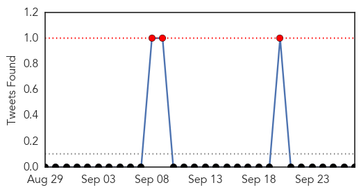

30 Day Trends
Web: 15 alerts, 3 warnings
Twitter: 0 alerts, 0 warnings
Top Articles:
- 0.998
- Dengue fever hits 39,000 in Viet Nam - Viet Nam
- 0.994
- Ex-CDC head urges governments over dengue
- 0.991
- Dengue in peak season: CECC
- 0.950
- Delhi patients have surgeries cancelled as hospitals go all-out to save dengue sufferers
- 0.948
- Rains spurt dengue cases in Kolkata
- 0.914
- Doctors at CGHS to provide consultation facilities to all due to rise in dengue cases
- 0.873
- Dengue menace: CGHS open for non-beneficiaries too
- 0.853
- Dengue in India: Time to take ‘Swachh Bharat’ drive seriously
- 0.834
- Include Centre in funds probe, minister tells CAG
- 0.803
- Dengue claims 2 kids in Cebu
- 0.721
- CGHS centres to provide primary outpatient medical care to public for dengue
- 0.583
- Shigella
- 0.581
- Three more die of dengue
Top Tweets:
-
No tweets found for Sep 27, 2015
Web/News Articles

Tweets
Article Locations